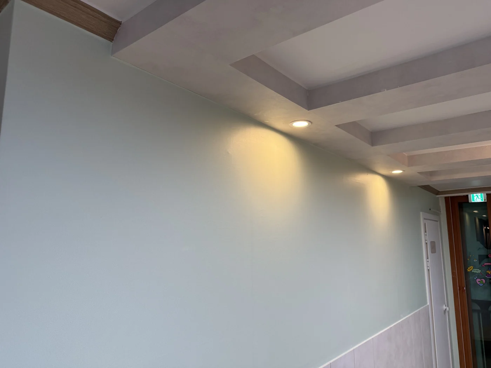
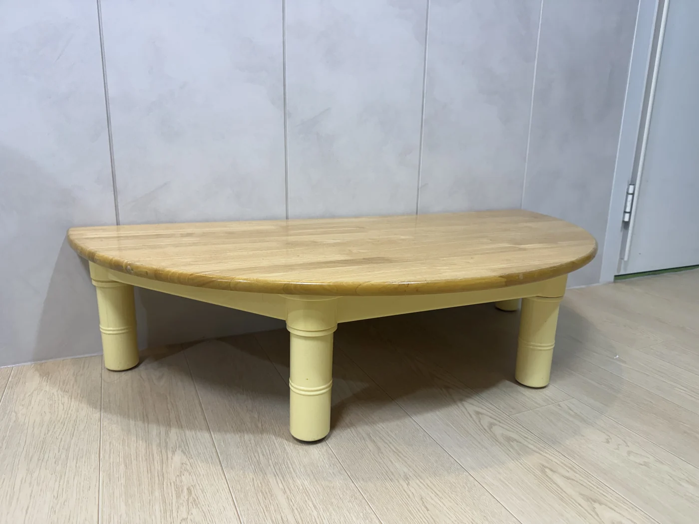

보수공사 완료
최근 공간을 정비한 뒤 새롭게 원아를 모집하고 있습니다. 실제 내부 사진을 함께 확인할 수 있도록 구성했습니다.
생활권 중심 위치
강서구 가양아파트 9단지 생활권 안에서 등하원 동선을 확인할 수 있도록 Kakao 지도와 주소 정보를 함께 제공합니다.
소규모 정원
정원 13명의 가정어린이집으로, 대형 시설과는 다른 소규모 돌봄 환경을 찾는 가정에 적합한 구성을 전면에 배치했습니다.
내부 사진
업로드된 실제 실내 사진을 랜딩페이지에 반영했습니다
실제 공간을 확인할 수 있도록 수납공간, 복도, 화장실, 교구, 테이블 등 내부 사진을 직접 노출하는 구조로 구성했습니다.
확인된 정보
현재 기준 문서 반영값
- 어린이집명: 꿈초롱 어린이집
- 주소: 서울 강서구 가양아파트 9단지 912동 106호
- 유형: 가정어린이집
- 정원: 13명
- 최근 보수공사 완료 후 신규 원아 모집
- 실제 내부 사진 반영 완료
추가 확정 필요
실운영 전 입력해야 하는 값
- 모집 대상 연령 / 반 구성
- 운영 시간 / 연장 보육 여부
- 원장 소개 및 보육 철학
- 식단 / 간식 / 특별활동 여부
- 전화번호 / 상담 채널 / 방문 상담 방식
공간 포인트
부모가 사진으로 먼저 확인하는 핵심 요소
정돈된 수납과 교구 배치
놀이교구와 수납공간이 실제 사진 기준으로 잘 드러나도록 구성했습니다.
밝고 차분한 실내 분위기
복도와 실내 조명 사진을 통해 전체적인 공간 분위기를 확인할 수 있습니다.
생활형 가정어린이집 구조
실내 테이블, 출입문, 화장실 등 부모가 실제로 궁금해하는 공간 요소를 분리해 노출합니다.


오시는 길
Kakao 지도로 위치를 바로 확인할 수 있습니다
어린이집 위치를 지도에서 바로 확인하고, 필요하면 Kakao 지도에서 크게 보기로 이동할 수 있도록 구성했습니다. 방문 상담이나 등하원 동선 확인에 바로 사용할 수 있는 영역입니다.
주소
서울 강서구 가양아파트 9단지 912동 106호
현재 Kakao 지도 JavaScript key는 보안상 비워둔 상태입니다. 실제 운영 시에는 Kakao Developers에서 키를 발급하고
daycare.dreamlabs.co.kr 도메인 등록 및 사용 제한 설정을 함께 점검해야 합니다.
상담 안내
상담 채널만 입력하면 바로 운영 가능한 구조입니다
현재 랜딩페이지 구조와 실내 사진 반영은 완료되었습니다. 다만 실제 모집 전환을 위해서는 전화번호, 상담 가능 시간, 카카오채널 또는 네이버폼 중 최소 1개 채널의 확정 입력이 필요합니다.